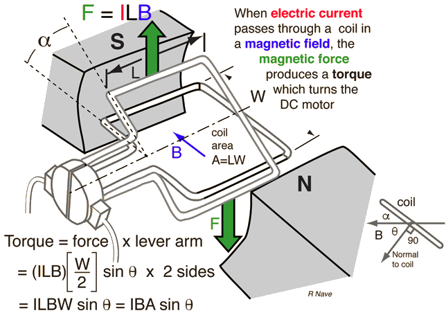

Electric motors
An electric motor consists of a coil of insulated wire, which spins between opposite poles of a U-shaped magnet or electromagnet. When current is passed round the coil, the coil turn because the wires along one edge of the oil are forced up and the wires along the opposite edge are forced down. When the coil is parallel to the field, the forces on the sides rotate the coil. If the loop turns past this angle and the current remains in the direction shown in the figure, the torque reverses direction and turns the loop in the opposite direction — that is, counterclockwise. To overcome this difficulty and provide continuous rotation in one direction, the current in the loop must periodically reverse direction.
As the coil turns through the position at 90° to the field, the split-ring commutator reverses its connections to the battery, reversing the current direction round the coil.
Although actual motors contain many current loops and commutators, for simplicity Figure 1 shows only a single loop and a single set of split-ring contacts rigidly attached to and rotating with the loop. Electrical stationary contacts called brushes are maintained in electrical contact with the rotating split ring. These brushes are usually made of graphite because it is a good electrical conductor as well as a good lubricant.